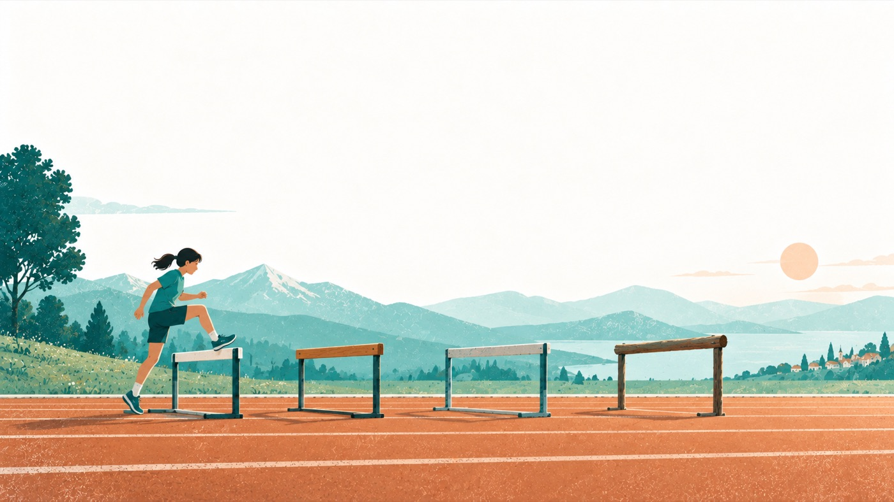
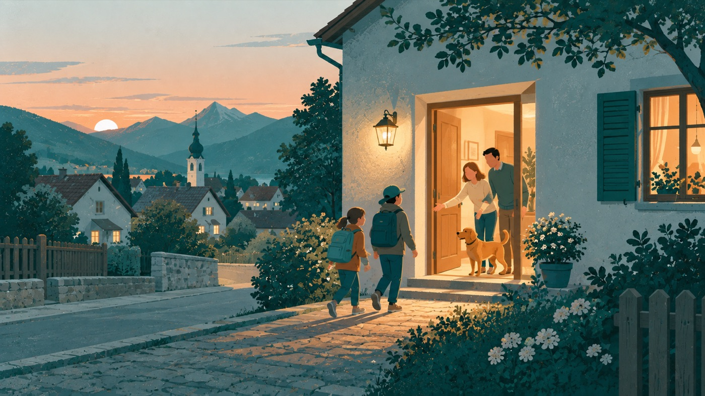
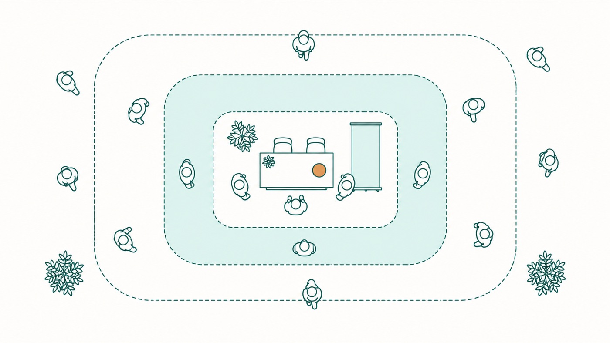
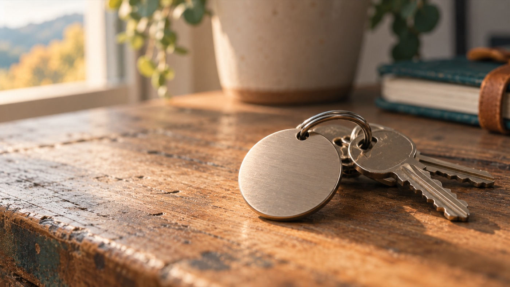
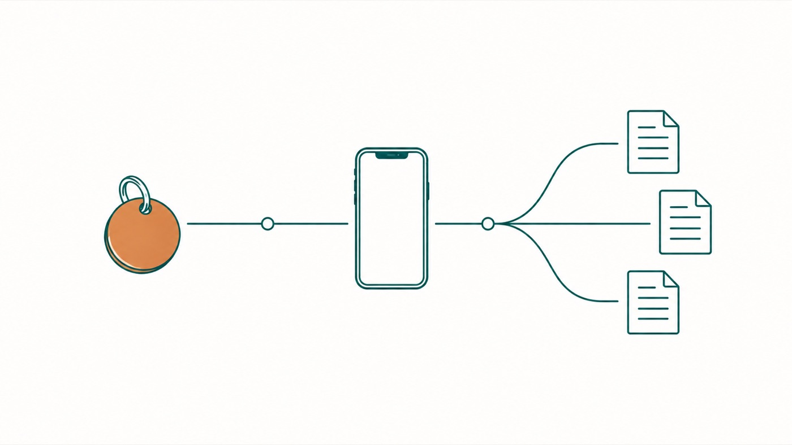

Was wir an der Ideen-Börse zeigen, und wie
Ein Vorschlag, wie wir aus einer Stunde Messebetrieb, ein bis zwei Tischen und einer Stehwand das Beste herausholen. Mit Erasmus+ als Thema und einer klaren Rolle für alle, die mitfahren.
Abschnitt Ausgangslage
Ausgangslage
Wir präsentieren nicht uns, wir geben etwas her
Der Rahmen ist eng: eine Stunde, freier Publikumsverkehr, kein Strom, kein Beamer, wenig Platz, viele Schulen gleichzeitig. Eine Präsentation im klassischen Sinn ist darin nicht möglich, und sie wäre auch das falsche Werkzeug.
Denn eine Lehrerin aus einer fremden Schule bleibt nicht stehen, weil unsere Schule beeindruckend ist. Sie bleibt stehen, weil sie in wenigen Sekunden erkennt, dass bei uns etwas liegt, das ihr eigenes Problem löst. Der Maßstab für einen gelungenen Tag ist deshalb nicht, wie gut wir dastehen, sondern wie viele echte Gespräche wir führen und wie viele Leute sich danach bei uns melden.
Das ist keine Bescheidenheit. Eine Schule, der nach der Veranstaltung fünf Kolleginnen schreiben, hat sich objektiv besser dargestellt als eine mit dem schöneren Rollup.
Unser Thema
Erasmus+ trägt, wenn wir es als Einladung erzählen
Wir haben etwas, das im Raum fast niemand hat: In ganz Niederösterreich sind es zwei Mittelschulen, und im Süden des Landes hat kaum eine Schule das Programm überhaupt beantragt. Diese Seltenheit ist unser Aufhänger. Eine konkrete, überprüfbare Zahl wirkt stärker als jede Formulierung, die wir uns ausdenken könnten.

Genau hier liegt aber auch das größte Risiko unserer Darstellung, und deshalb steht es hier so deutlich:
Seltenheit wirkt entweder als Trophäe oder als Einladung. Wenn unser Stand signalisiert „wir haben etwas, das ihr nicht habt", ist die Reaktion Bewunderung. Und Bewunderung beendet ein Gespräch, sie eröffnet keines. Die Besucherin denkt „schön für die", nickt freundlich und geht weiter. Wir hätten dann einen bestaunten Stand und keine einzige Adresse.
Die Lösung liegt im zweiten Teil unserer eigenen Beobachtung: Es scheitert hier fast nie an der Bewerbung. Es scheitert daran, dass kaum jemand antritt, weil das Programm als überfordernd gilt. Das ist eine ermutigende Nachricht, und sie ist wahr.
Praktisch heißt das: Die Zahl darf nie allein stehen. Sie braucht immer sofort die Frage dahinter, die den Besucher einbezieht statt ihn zum Zuschauer zu machen, sinngemäß nur zwei, und warum eigentlich? Am Wort „gewonnen" würde ich am Stand ebenfalls nicht festhalten, so berechtigt es sich für uns anfühlt: Gewinnen setzt Verlierer voraus, und niemand steht gern vor einem Stand, der ihn dazu macht.
Für die meisten Schulen ist Erasmus+ eine Belohnung.
Bei uns ist es ein Ausgleich.
Das ist die ganze Sache in zwei Sätzen, und es ist der Satz, der Diversität, Inklusion und Chancengleichheit zusammenhält, ohne eines dieser Wörter zu benutzen. Chancengleichheit steckt im Wort Ausgleich. Inklusion ist der Beweis, dass „alle" wörtlich gemeint ist. Und Diversität entsteht von selbst, weil bei „alle" eben alle Hintergründe mitfahren, statt dass wir uns die passenden aussuchen.
Der Satz ist außerdem kein Selbstlob, sondern eine These. Er widerspricht dem, wie die meisten im Raum über Auslandsfahrten denken, und genau deshalb bleiben sie stehen.
Unser Stolz ist vollkommen berechtigt, und er ist die Energie, die uns durch den Tag trägt. Er gehört nur an die richtige Stelle: in unsere Haltung, nicht in unseren Text. Stolze Leute, die großzügig weitergeben, sind anziehend. Stolze Texte sind abweisend.
Die Rechnung
Es geht um zwölf gute Gespräche, nicht um einen Saal
Eine Stunde, zwei gleichzeitig ansprechbare Personen, realistisch fünf Minuten pro Gespräch. Das ergibt im besten Fall rund zwanzig Gespräche, realistisch zehn bis fünfzehn.
Diese Zahl ist keine Ernüchterung, sondern eine Erleichterung. Zwölf Gespräche sind planbar, und sie kalibrieren unseren Aufwand: Für eine Stunde bauen wir kein Großprojekt, sondern fünf Dinge, die sitzen.
Sie hat aber zwei Folgen, die wir ernst nehmen müssen. Erstens: In fünf Minuten überzeugt man niemanden von einer Praxis, man weckt nur Interesse. Der eigentliche Ertrag ist deshalb die Mail in der Woche danach. Zweitens: Wer am Stand wartet, verliert. Wer nicht gerade am Tisch steht, geht zu anderen Ständen, redet dort und bringt Leute mit. Ein persönlich Hergeführter ist mehr wert als zehn zufällig Vorbeigehende.
Botschaftsarchitektur
Drei Sätze in dieser Reihenfolge
Die Reihenfolge trägt hier die eigentliche Arbeit. Sie führt vom offenen Angebot über den Beweis zur Verbindlichkeit, und in dieser Richtung fühlt sich der Besucher eingeladen statt abgehängt.
Die Tür: Das kann fast jede Schule, und fast keine tut es
Öffnet bei allen, weil es kein Vorwissen verlangt und niemanden ausschließt. Es räumt die Blockade weg, mit der unsere Besucher ankommen, nämlich das stille „Erasmus ist nichts für uns".
Der Beweis: Bei uns waren alle 120 dabei
Der Normalfall bei Auslandsfahrten ist Auswahl. Es fahren die Guten, die Motivierten, die, deren Eltern es sich leisten können. Wir haben in zwei Etappen die ganze Schule gebracht. Das ist logistisch die unbequemere Variante und genau deshalb aussagekräftig.
Jede Lehrerin hat dazu sofort eine Frage im Kopf: Auch der, der sonst nie mitfährt? Auch die schwierige Gruppe? Auch Familien, bei denen das Geld knapp ist? Damit ist das Gespräch von selbst eröffnet.
Das Angebot: Wir zeigen euch, wie ihr hineinkommt
Wir sind an diesem Tag vermutlich die einzige Stelle im Raum, die diese Frage beantworten kann. Daraus können wir mehr machen als einen Bericht über uns: ein kollegiales Angebot, für andere Schulen ansprechbar zu sein.
Das häufigste stille Urteil eines Messebesuchers lautet „schön für euch, aber bei uns geht das nicht". Große Schulen mit Sonderbudget und Projektstelle lösen es zuverlässig aus. Wir können es gar nicht auslösen: Alles, was eine Schule mit 120 Kindern tatsächlich macht, ist ohne Extrastruktur machbar. Wir müssen das nur aussprechen, statt uns dafür zu entschuldigen. Bei 120 Kindern ist „alle" ein ehrgeiziges Ziel, bei 800 wäre es unmöglich.
Diversität, Inklusion, Chancengleichheit
Wir belegen sie, statt sie zu behaupten
Diese Themen gehören unbedingt in unsere Darstellung, sie sind der inhaltliche Kern dessen, was wir tun. Die Frage ist nur, wie sie dort auftreten.
Mein Vorschlag: nicht als Wörter auf dem Poster. Nicht weil sie falsch wären, sondern weil jede Lehrperson im Raum sie aus fünfzig Leitbildern und Fortbildungsankündigungen kennt. Sie sind zu Geräusch geworden. „So leben wir Diversität" liest niemand mit echtem Interesse, weil der Satz nichts behauptet, was man überprüfen könnte. Es ist die Sprache, in der wir den Antrag geschrieben haben, und die hatte ihr Publikum bereits: Brüssel. Am Stand steht ein anderes.
Die stärkere Bewegung ist die umgekehrte: Wir nennen die Tatsache und lassen den Besucher den Wert selbst denken. „Alle 120, auch die, die noch nie weg waren" ist gelebte Chancengleichheit, nur eben bewiesen statt beteuert. Ein selbst gedachter Gedanke hält ungleich besser als ein vorgesetzter.

Als Merksatz für die Vorbereitung: Werte behauptet man nicht, man belegt sie. Die Begriffe fallen selbstverständlich im Gespräch, sobald jemand nachfragt, und sie stehen ebenso selbstverständlich in den Unterlagen. Sie sind nur nicht die Eingangstür. Damit erreichen wir unser Ziel besser, nicht schlechter: Die Leute sollen uns als Schule sehen, die Chancengleichheit ernst nimmt, und das leistet der Beweis, nicht das Wort.
Was wir erzählen
Eine Geschichte braucht ein Kind, nicht 120
Damit steht die Frage im Raum, womit wir belegen. Und hier fehlt uns derzeit noch das Wichtigste, deshalb steht dieser Abschnitt bewusst als offene Baustelle da.
Denn „alle 120" ist eine Zahl, und Zahlen belegen, aber sie bewegen niemanden. Der Satz hat außerdem keinen Konflikt, und ohne Konflikt gibt es keine Erzählung, sondern nur eine Mitteilung. Der Motor einer Geschichte liegt nicht im Erfolg, sondern im Widerstand: nicht „alle waren dabei", sondern „bei diesen zwei sah es lange so aus, als ginge es nicht, und das haben wir gemacht". Erst dann wird aus Chancengleichheit etwas, das man sich vorstellen kann.
Dazu kommt, dass unsere Zahl nur eine der vier Dimensionen trägt, nämlich den Zugang. Diversität, Inklusion und Begabungsförderung hängen bisher daran mit, ohne belegt zu sein.
Sie passt logisch schlecht zu „alle". Wenn alle fahren, ist das Chancengleichheit. Begabungsförderung heißt normalerweise, jemandem etwas zu geben, das nicht alle bekommen. Beides nebeneinander zu stellen, schwächt beides. Für eine Stunde Messebetrieb sind vier Werte ohnehin zu viele: Zwei, die sitzen, wirken stärker als vier, die im Antrag stehen.

Unsere Geschichte in vier Sätzen
Das ist der Rahmen, in den die Einzelgeschichten fallen. Vier Sätze, die jede und jeder von uns auswendig kann, und die zusammen eine Bewegung ergeben statt einer Aufzählung.
- Eine Schule mit 120 Kindern im Triestingtal, ohne Projektstelle und ohne Extrabudget.
- Sie bewirbt sich für ein Programm, das hier im Süden praktisch niemand beantragt.
- Sie fährt nicht mit den Besten, sondern in zwei Etappen mit allen.
- Und in zwei Wochen kommen die italienischen Kinder zu uns und schlafen auf Feldbetten im Turnsaal, die wir selbst herrichten.
Der vierte Satz ist durch den frühen Termin stärker geworden, nicht schwächer. Er steht in der Zukunft, und damit ist unser Projekt kein abgeschlossener Bericht, sondern etwas, das gerade läuft.
Vier Hürden, vier mögliche Geschichten
Die Begriffe sind keine vier Botschaften, sondern vier Hürdentypen, die wir überwunden haben. Das ist die Frageliste fürs Kollegium, und aus den Antworten entsteht der erzählbare Teil.
| Hürde | Die Frage, die wir uns stellen | Belegt |
|---|---|---|
| Geld | Welche Familie hätte das nicht zahlen können, und wie haben wir es gelöst, ohne dass das Kind es gemerkt hat? | Chancengleichheit |
| Können | Gab es Kinder mit SPF, mit einer Beeinträchtigung, mit Medikamenten, mit Angst vorm Fliegen oder vorm Weggehen? Was haben wir organisiert, damit es trotzdem ging? | Inklusion |
| Sprache und Herkunft | Wie ist es Kindern gegangen, die zuhause nicht Deutsch sprechen? Und gab es Kinder mit eigener Migrationserfahrung, für die „ins Ausland fahren" etwas anderes bedeutet als für die übrigen? | Diversität |
| Zutrauen | Welche Eltern wollten zuerst nicht, und was hat sie umgestimmt? | Chancengleichheit |
Die letzte dürfte die härteste Hürde von allen sein und zugleich die, über die andere Schulen am wenigsten Auskunft bekommen. Genau deshalb hört man uns dort besonders genau zu.
Wo die Geschichte im Gespräch sitzt
Wir erzählen eine Geschichte, nicht vier, und sie dauert zwanzig bis dreißig Sekunden. Mehr geht nicht, wir haben fünf Minuten für alles. Ihr Platz ist genau die Stelle im Neunzig-Sekunden-Kern, an der bisher „was zuerst nicht funktioniert hat" steht. Damit fallen der ehrliche und der bewegende Teil zusammen, und wir brauchen für beides nur einen Atemzug.

Der Gegenbesuch ist dafür die bessere Bühne als unsere Hinfahrt, und durch den frühen Messetermin steht er sogar noch bevor. Wir erzählen ihn also in der Gegenwart: In zwei Wochen kommen sie zu uns. Das macht aus einem Bericht ein laufendes Vorhaben, und das hat an dem Tag kein anderer Stand.
Das stärkste Detail daran ist der Turnsaal. Die italienischen Kinder schlafen bei uns auf Feldbetten, die wir selbst herrichten. Das ist kein Notbehelf, das ist die ganze Idee in einem Bild: Wir machen es mit dem, was wir haben. Gastfamilien kann nicht jede Schule organisieren, einen Turnsaal hat jede. Damit ist auch dieser Teil nachmachbar, und genau danach suchen die Leute an dem Tag.
Wir erzählen von einzelnen Kindern vor fremden Lehrpersonen. Bei 120 Kindern in einer kleinen Gemeinde ist „das Mädchen aus der dritten Klasse im Rollstuhl" identifizierbar, auch ohne Namen. Wir brauchen deshalb Fassungen, die das Prinzip erzählen, ohne das Kind erkennbar zu machen, und bei allem, was nah geht, die Zustimmung der Familie. Für Fotos gilt das erst recht.
Wie wir es nennen
Ein Name, der nicht nach Formular klingt
„Erasmus+" ist eine Programmbezeichnung, kein Titel. Das Wort klingt nach Antrag, Abrechnung und Brüssel, und es erklärt niemandem, was bei uns passiert ist. „Wir sind nach Italien gefahren" wiederum ist zwar verständlich, aber das hat jede zweite Schule schon gemacht. Wir brauchen dazwischen etwas Eigenes.
Dabei sind es zwei verschiedene Dinge, die man leicht verwechselt. Der Name bleibt und steht auf dem Chip, in der Mappe und in jeder Mail danach. Die Schlagzeile gilt nur für diesen einen Tag und steht groß auf dem Poster. Der Name ist ruhig, die Schlagzeile darf zuspitzen.
Vier Namen zur Auswahl
Drei Schlagzeilen fürs Poster
Aus drei Metern lesbar, unter sieben Wörtern, oben statt mittig. Alle drei funktionieren mit jedem der Namen darunter.
- „Bei uns fahren alle." Die ruhigste. Setzt darauf, dass die Besucherin selbst merkt, wie ungewöhnlich das ist.
- „Alle 120. Auch die, die noch nie weg waren." Die wärmste. Nennt die Zahl und öffnet sofort die Frage nach den schwierigen Fällen.
- „Zwei Mittelschulen in NÖ. Warum eigentlich?" Die offensivste. Zieht die Seltenheit nach vorn, aber als Frage an alle statt als Trophäe.
Meine Empfehlung: die zweite oben groß, der gewählte Name klein darunter. Damit steht der Beweis im Blickfeld und der Name wandert über den Chip in den Alltag der Leute.
Der Stand
Drei Zonen, die verschiedene Aufgaben haben
Der Aufbau folgt der Entfernung des Besuchers. Jede Zone hat genau eine Aufgabe, und keine übernimmt die Aufgabe der nächsten.
| Zone | Aufgabe | Regel |
|---|---|---|
| Drei Meter Rollup, großes Poster |
Anziehen. Kein Informationsträger, sondern ein Magnet. | Aus drei Metern lesbar, Schlagzeile unter sieben Wörtern, oben statt mittig. |
| Ein Meter Der Tisch |
Öffnen. Ein Gegenstand, den man in die Hand nehmen kann. | Echtes, benutztes Material aus dem Projekt, keine Fotocollage. Gebrauchsspuren sind ein Qualitätsmerkmal. |
| Gespräch Wer schon steht |
Vertiefen und übergeben. | Zweites A3 mit dem Wie, Chip und Blatt übergeben, Kontakt notieren. |

Der Gegenstand auf dem Tisch ist unser Ersatz für den fehlenden Beamer und ehrlich gesagt besser als einer. Er zieht die Hand an, und wo die Hand hingeht, geht der Körper hin. Er beweist ohne Behauptung, dass wir das wirklich tun. Und er erzeugt die erste Frage von selbst, sodass niemand von uns jemanden ansprechen muss. Was genau es wird, entscheiden wir gemeinsam.
Was wir sagen: ein Kern von neunzig Sekunden
Kein Vortrag. Bei freiem Publikumsverkehr kommen die Leute versetzt, eine Ansprache zur Minute fünf verpufft. Stattdessen ein kurzer Kern, den jede und jeder von uns beliebig oft sprechen kann: das Problem, das alle kennen. Was wir konkret getan haben. Was es uns gebracht hat. Was zuerst nicht funktioniert hat. Und dann die Übergabe mit einer Gegenfrage: „Wie läuft das bei euch?"
Der vierte Teil ist der wichtigste. Ein Stand, der nur die Sonnenseite zeigt, bestätigt genau das Vorurteil „bei denen ging es halt, bei uns nicht". Ein Satz darüber, wo wir uns verrannt haben, macht die Sache erst glaubwürdig und nachmachbar. Unter Kolleginnen ist Glaubwürdigkeit die knappe Währung, nicht Perfektion.
Wer was tut
Rollen statt alle hinter dem Tisch
Drei bis fünf Personen an einem kleinen Stand kippen leicht in eine geschlossene Gruppe, und an einer geschlossenen Gruppe geht man vorbei. Deshalb teilen wir vorher auf.
| Rolle | Aufgabe |
|---|---|
| Ansprache | Steht vor dem Tisch, nicht dahinter. Der Tisch ist sonst eine Theke, und eine Theke ist eine Grenze. Spricht den Kern. |
| Vertiefung | Übernimmt, wer länger bleibt. Kennt die Zahlen, den Ablauf und die Stellen, an denen es geklemmt hat. |
| Rückkanal | Kontaktliste, Chips und Blätter, behält den Überblick, wer noch wartet. |
| Unterwegs | Geht zu anderen Ständen, knüpft dort an und bringt Leute mit. Bei nur einer Stunde verdoppelt das unsere Reichweite. |
Wenn wir nur zu dritt sind, gehen Rückkanal und Unterwegs zusammen: Dieselbe Person kümmert sich um Liste und Chips und geht in ruhigen Minuten los. Was nicht geht, ist die Ansprache unbesetzt zu lassen.
Dazu ein Handgriff, der viel entscheidet: In den ersten dreißig Sekunden klären, ob wir mit einer Klassenlehrerin oder mit einer Schulleitung sprechen. Die beiden bringen verschiedene Fragen mit. Die Lehrerin will wissen, wie das praktisch war, mit Dreizehnjährigen eine Woche im Ausland, wie viel Arbeit das zusätzlich bedeutet und was es mit der Klasse gemacht hat. Die Schulleitung will wissen, was es kostet, was die EU zahlt, wie man hineinkommt, wie es sich mit Aufsicht und Abrechnung verhält und wie man eine Partnerschule findet. Zwei Spuren, ein Stand.
Zum Mitnehmen
Ein Blech-Chip statt eines Flyers
Dass die Leute mit etwas weggehen müssen, ist richtig. Ein Stand ohne Mitnehmbares hat keine Wirkung über den Tag hinaus, und das wäre zu wenig für den Aufwand, den wir betreiben.
Ein klassischer Imageflyer leistet das aber nicht. Er wird gefaltet, eingesteckt und am Abend weggeworfen. Das ist keine Geschmacksfrage, das ist schlicht, was mit Papier passiert, das keinen Gebrauchswert hat.

Unsere Lösung sind 200 Blech-Chips mit eingelasertem QR-Code, die zu einer digitalen Mappe mit Unterlagen, Checklisten und Erfolgsgeschichten führen. Das ist dem Flyer aus drei Gründen überlegen: Metall wirft niemand weg, weil es sich wertig anfühlt und Gewicht hat. Es landet am Schlüsselbund oder auf dem Schreibtisch statt im Altpapier, bleibt also monatelang sichtbar. Und der Inhalt dahinter kann wachsen, ohne dass wir etwas nachdrucken müssen.
Nicht zu verwechseln ist der Chip mit dem Gegenstand auf dem Tisch. Der Chip geht mit, das Ausstellungsstück bleibt da. Beide arbeiten mit derselben Kraft, nämlich dass etwas in der Hand ein Gespräch von selbst eröffnet, aber sie ersetzen einander nicht.
Ein gelaserter QR-Code ist für immer. Zeigt er auf eine Adresse, die in zwei Jahren tot ist, sind 200 Chips Abfall und jeder, der ihn dann scannt, landet im Nichts.
Deshalb darf im Code niemals ein Link auf einen Cloud-Ordner stehen, denn solche Adressen ändern sich. Es gehört eine kurze, eigene Adresse hinein, die wir dauerhaft kontrollieren und die im Hintergrund weiterleitet, wohin wir wollen. Dann können wir die Mappe jederzeit umziehen, umbauen oder erweitern, und die Chips funktionieren trotzdem. Diese Adresse muss stehen und getestet sein, bevor der erste Chip in den Laser geht.
Ein zweiter Punkt aus derselben Logik: Auf dem Chip darf nicht nur der Code sein. Ein nackter QR-Code sagt in drei Wochen niemandem mehr, wofür er war. Es gehört zumindest unser Schulname dazu und idealerweise ein Wort, das an das Gespräch erinnert. Der Chip ist ein Andenken, nicht nur ein Türöffner.
Bei knapp zwei Wochen Vorlauf ist die Lieferung der Chips das einzige Risiko, das wir nicht selbst in der Hand haben. Deshalb gilt: Wenn uns bis spätestens zwei Tage nach der Bestellung niemand eine verbindliche Zusage gibt, schwenken wir auf gedruckte Karten im Visitenkartenformat mit demselben QR-Code um. Gleiche Funktion, weniger Haltbarkeit, dafür kein Risiko. Diese Entscheidung treffen wir früh und nicht in der letzten Woche.
Braucht es den Flyer dann noch?
Nicht als Flyer, aber ein einzelnes Blatt hat weiterhin seinen Platz, und ich würde es abgestuft einsetzen. Der Chip geht an alle, mit denen wir reden, auch an die kurzen Kontakte. Das Blatt bekommt nur, wer ein echtes Gespräch mit uns hatte, und es ist kein Imageblatt, sondern der Weg zum eigenen Erasmus in Schritten. Das ist das Blatt, das jemand am Montag seiner Direktorin auf den Tisch legen kann, und dafür ist Papier nach wie vor besser als ein Link, den man erst öffnen muss.
Diese Abstufung hat noch einen Nebeneffekt: Wer das Blatt bekommt, merkt, dass er mehr bekommen hat als die anderen. Das ist ein kleiner, aber echter Unterschied im Gedächtnis.
- Am Stand scannen lassen, nicht erst daheim. Ein Chip, der in der Jackentasche verschwindet, wird oft nie gescannt. „Scannen Sie kurz, dann haben Sie es gleich" dauert zehn Sekunden und verdoppelt die Trefferquote.
- Bewusst überreichen statt auflegen. Ein Chip, den man in die Hand gelegt bekommt, wird behalten. Einer, den man von einem Haufen nimmt, nicht.
- 200 Stück sind mehr, als wir an dem Tag brauchen. Aus rund zwölf Gesprächen und den kurzen Kontakten drumherum werden vielleicht dreißig Chips. Das ist kein Fehler, Blech verdirbt nicht: Der Rest geht an Elternabende, ins eigene Kollegium und an die nächste Veranstaltung.

Die Mappe hinter dem Code
Sie ist damit ein eigenes Arbeitspaket und nicht mehr nur ein Anhängsel. Sie muss vor der Messe stehen, sonst führt der Chip ins Leere. Was hineingehört, ergibt sich aus den Fragen, die uns am Stand gestellt werden: der Weg zum Antrag, unsere Checklisten, was uns überrascht hat, die Geschichten, und eine Möglichkeit, uns zu schreiben.
Ein Vorteil dabei: Diese Mappe können wir nach der Messe weiter ausbauen. Wer den Chip behält, kommt auch in einem halben Jahr wieder darauf, und dann steht mehr drin als heute.
Die Liste, die fast alle Stände vergessen
Der Chip ersetzt sie nicht. Er bringt die Leute zu uns, aber wir erfahren nicht, wer sie waren. Deshalb weiterhin eine schlichte Liste auf dem Tisch: „Wir schicken Ihnen die Unterlagen", Name und Mailadresse. Das verschiebt den Ertrag vom hektischen Messetag auf die ruhige Mail danach und entlastet uns enorm, weil wir vor Ort niemanden überzeugen müssen. Wir müssen nur Interesse einsammeln. Und wir haben danach ein Ergebnis in der Hand statt eines Gefühls.
Unser Angebot, andere Schulen ein Stück weit zu begleiten, ist dabei der natürlichste denkbare Grund, die Adresse dazulassen. Wir sollten vorher nur intern festlegen, wie viel wir wirklich zusagen wollen, damit daraus im November keine Last wird. Lieber etwas Kleines, das wir sicher halten, als eine große Geste, die verhungert.
Zielbild
Woran wir am Abend erkennen, dass es gelungen ist
Ein klares, bescheidenes Erfolgskriterium nimmt der Vorbereitung den diffusen Druck. Bei unklaren Zielen hat man immer das Gefühl, es falsch zu machen, und genau daher kommt die Unsicherheit im Kollegium.
- Wir haben rund zwölf echte Gespräche geführt, keine Begrüßungen.
- Wir nehmen eine Handvoll Adressen von Leuten mit, die die Unterlagen wollen.
- Mindestens eine Schule meldet sich in den zwei Wochen danach.
Das größere Ziel dahinter, und es ist realistisch: Wir verlassen die Veranstaltung nicht als eine von vielen ausstellenden Schulen, sondern als die Adresse in der Region für dieses Thema. Das ist mehr als eine gute Darstellung, das ist eine Rolle. Und sie ist genau deshalb zu haben, weil im Süden Niederösterreichs sonst niemand sie besetzt.
Fahrplan
Was bis wann fertig sein muss
Bis zur Messe sind es knapp zwei Wochen, davon rund neun Arbeitstage. Die Reihenfolge unten ist nach Vorlaufzeit sortiert, nicht nach Wichtigkeit: Zuerst kommt, was andere für uns herstellen müssen, zuletzt, was wir selbst in der Hand haben.
- Die Adresse hinter dem QR-Code festlegen. Blockiert alles am Chip. Eine kurze eigene Adresse, die im Hintergrund weiterleitet, damit die Mappe später umziehen kann.
- Chips anfragen und bestellen, mit verbindlicher Zusage. Ohne Zusage sofort auf gedruckte Karten umschwenken.
- Schulleitung entscheidet über die zwei Werte und gibt den Leitgedanken frei. Ohne das kein Postertext.
- Die vier Hürdenfragen im Kollegium durchgehen. Der kritische Pfad. Wenn keine Konferenz ansteht, reichen vier Einzelgespräche mit den Mitgefahrenen.
- Dabei gleich festhalten, was wir öffentlich erzählen dürfen.
- Akkreditierung klären und die Zahl beim OeAD bestätigen lassen. Beides sind Anrufe.
- Namen und Schlagzeile auswählen.
- Poster in Druck geben. Letzter sinnvoller Termin. Kommt das Rollup nicht mehr sicher, zwei A3 auf die Stehwand, und das ist ausdrücklich kein Notbehelf.
- Digitale Mappe aufsetzen, zunächst als Gerüst. Sie darf bis zum Messetag wachsen, sie muss nur unter der QR-Adresse erreichbar sein.
- Ausstellungsstück auswählen. Kostet nichts und liegt vermutlich schon im Schrank.
- Schritt-für-Schritt-Blatt auf dem Schuldrucker, rund 60 Stück.
- Kontaktliste als A4 mit Spalten für Name, Schule und Mail.
- Sprechzettel im Hosentaschenformat, für jede mitfahrende Person einer.
- Trockenlauf im Konferenzzimmer, zwanzig Minuten. Jede Person spricht den Kern einmal laut, die anderen spielen Besucher. Das ist der Schritt, der am ehesten ausfällt und am meisten bringt.
- Rollen fix verteilen, inklusive der Regelung, wenn nur drei fahren.
- QR-Code auf drei Geräten testen, darunter ein altes.
- Die Mails rausschicken. Das ist der eigentliche Ertrag des Tages. Eine Person ist dafür namentlich zuständig, sonst passiert es nicht.
Nächste Schritte
Die offenen Punkte im Einzelnen
Wann welcher Punkt dran ist, steht im Fahrplan darüber. Hier steht, worum es inhaltlich geht. Die beiden zum QR-Code sind die eiligsten, weil ein gelaserter Code sich nicht mehr ändern lässt.
- □Budget und wer mitfährtDer Termin steht, der Gegenbesuch aus Italien liegt danach. Offen sind noch das Budget für Rollup und Chips und die Namen der drei bis fünf Personen, die mitfahren. Beides wird für den Fahrplan gebraucht.
- □Die vier Hürdenfragen im Kollegium durchgehenGeld, Können, Sprache und Herkunft, Zutrauen: je eine Runde, wer sich an einen konkreten Fall erinnert. Das ist der dringendste Punkt, denn ohne diese Antworten bleibt unser Thema eine Zahl. Am besten mit allen, die mitgefahren sind, und im selben Zug festhalten, was wir davon öffentlich erzählen dürfen.
- □Entscheiden, welche zwei Werte wir tragenMein Vorschlag sind Chancengleichheit und Inklusion, weil wir sie mit „alle 120" und den Einzelfällen belegen können. Begabungsförderung würde ich weglassen. Diese Entscheidung sollte die Schulleitung treffen, bevor wir an Poster und Sprechtext gehen.
- □Sind wir akkreditiert oder läuft es über Einzelprojekte?Für Schulleitungen ist das die entscheidende Information: Die Akkreditierung macht den großen Antrag einmalig, danach kommen die Mittel jährlich ohne neues Projektverfahren. Genau das wissen die meisten Schulen nicht, und genau das entkräftet das „zu überfordernd" am wirksamsten.
- □Die Zahl belegen lassenWenn „zwei Mittelschulen in Niederösterreich" auf das Poster kommt, muss sie stimmen, falls doch jemand mit einer dritten auftaucht. Beim OeAD als Nationalagentur bestätigen lassen und ein Stichdatum dazuschreiben.
- □Wie wir die Partnerschule gefunden habenWenn wir sie nach inhaltlicher Passung zu unseren Schwerpunkten ausgesucht haben und nicht danach, wer zufällig verfügbar war, ist das eine übertragbare Lehre. Partnersuche ist nach dem Antrag die zweitgrößte Hürde, und danach wird uns jeder fragen.
- □Die dauerhafte Adresse für den QR-Code festlegenBlockiert die Chip-Produktion. Eine kurze, eigene Adresse, die wir dauerhaft kontrollieren und die im Hintergrund weiterleitet, damit die Mappe später umziehen kann. Vor dem Lasern mit mehreren Handys testen, auch mit einem alten.
- □Inhalt der digitalen Mappe festlegenMuss vor der Messe stehen, sonst führt der Chip ins Leere. Weg zum Antrag, Checklisten, Erfolgsgeschichten, Kontaktmöglichkeit. Danach laufend erweiterbar.
- □Der Gegenstand für den TischEchtes Material aus dem Projekt, kein Schaustück. Sammeln wir gemeinsam, sobald die Punkte oben geklärt sind.
Sobald die Hürdenrunde im Kollegium gelaufen ist, arbeite ich daraus die konkrete Fassung aus: Schlagzeile und Postertext, den Neunzig-Sekunden-Kern zum Auswendiglernen, die Beschriftung des Chips, das Schritt-für-Schritt-Blatt und einen Zeitplan bis zur Messe.